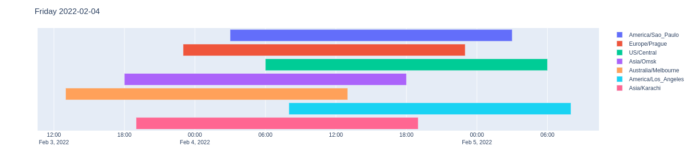

Strange things
2000 vintages at once
This is an undocumented feature. (AL)FRED is limited to a maximum of 2000 vintage dates. Unfortunately, their implementation does not allow for client-side pagination - see issues/2 and fredapi/pull/52).
FRED Maps units
pystlouisfed.FREDMaps.regional_data has a units parameter.
In the official documentation is only “The units of the series you want to pull.”.
But it doesn’t matter what we set here, only the title will change:
https://api.stlouisfed.org/geofred/regional/data?series_group=882&date=2013-01-01®ion_type=state&units=ABC&frequency=a&season=NSA
<series_data title="2022 Per Capita Personal Income by State (ABC)" region="state" seasonality="Not Seasonally Adjusted" units="ABC" frequency="Annual">
<observation date="2013-01-01" region="Arizona" code="04" value="36877" series_id="AZPCPI"/>
<observation date="2013-01-01" region="Hawaii" code="15" value="43553" series_id="HIPCPI"/>
...
https://api.stlouisfed.org/geofred/regional/data?series_group=882&date=2013-01-01®ion_type=state&units=SOME-UNIT-PARAMETER&frequency=a&season=NSA
<series_data title="2022 Per Capita Personal Income by State (SOME-UNIT-PARAMETER)" region="state" seasonality="Not Seasonally Adjusted" units="SOME-UNIT-PARAMETER" frequency="Annual">
<observation date="2013-01-01" region="Arizona" code="04" value="36877" series_id="AZPCPI"/>
<observation date="2013-01-01" region="Hawaii" code="15" value="43553" series_id="HIPCPI"/>
...
Time Zones
FRED/ALFRED works with date in 99% of cases. But what is a date? For example, the friday “2022-02-04” can be almost anything - it depends on the time zone:
Let’s say we are in the “Europe/Prague” timezone (UTC+1) and at 2:00am we call the method pystlouisfed.FRED.series_observations():
from pystlouisfed import FRED
from datetime import date
fred = FRED(api_key='abcdefghijklmnopqrstuvwxyz123456')
fred.series_observations(series_id='GDP', realtime_start=date.today(), realtime_end=date.today())
FRED/ALFRED will return the error:
Warning
“Bad Request. Variable realtime_start can not be after today’s date…”
because it works in the timezone “US/Central” (UTC−06:00)! Probably all the date values that the API returns are in “US/Central”, but I haven’t verified it.